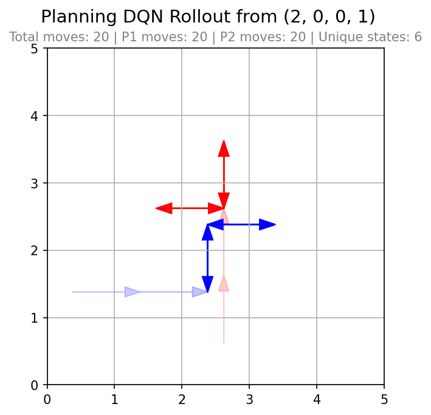
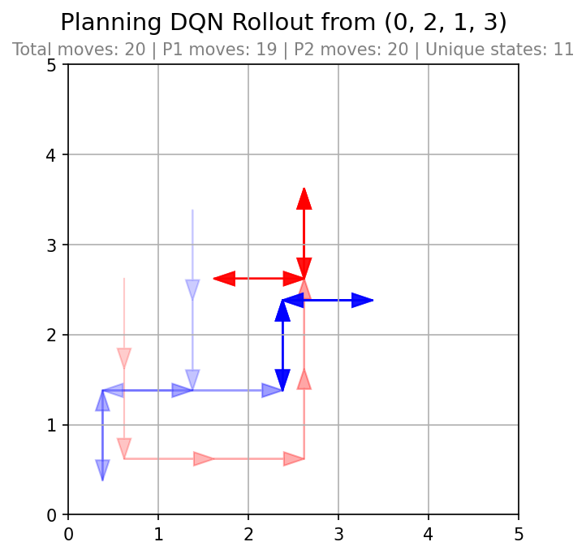
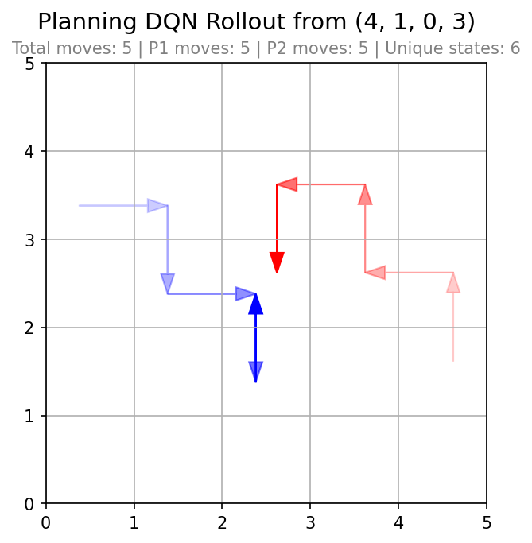
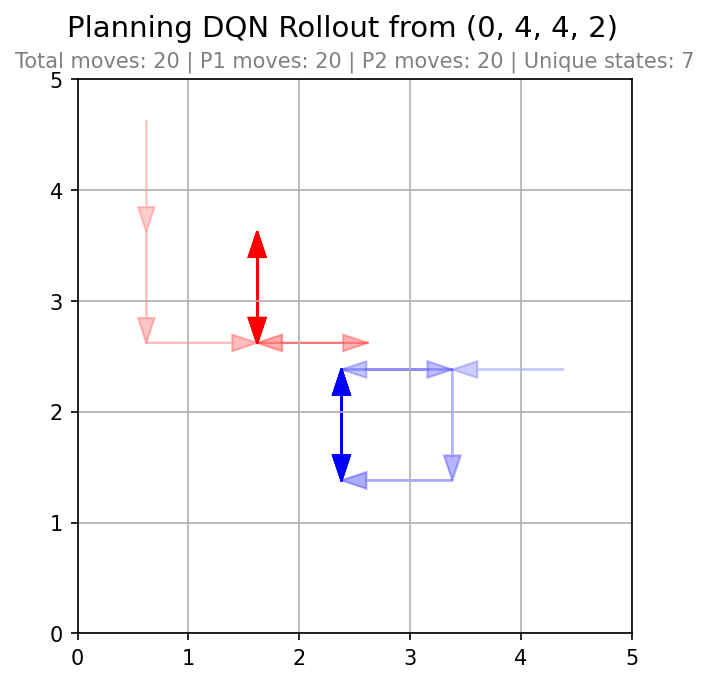
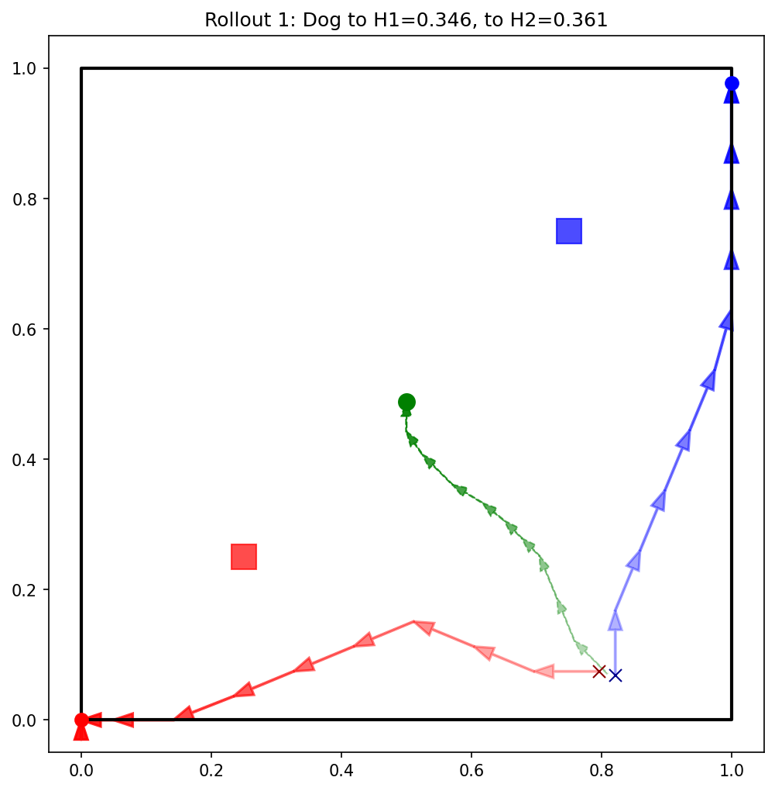
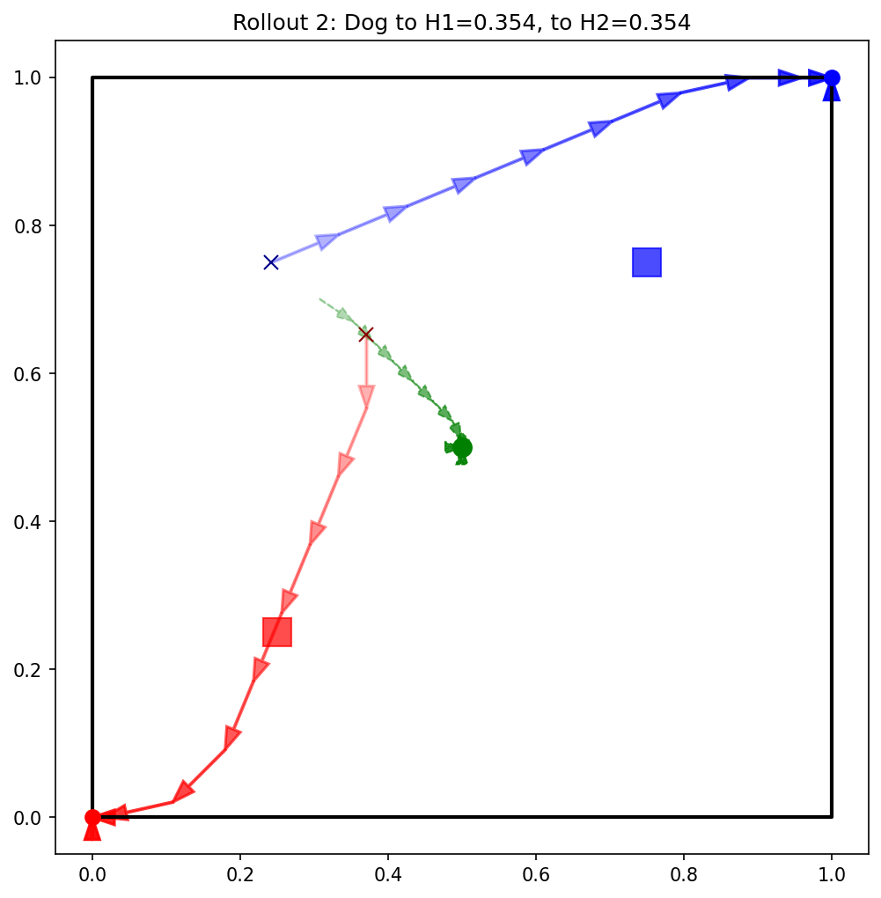
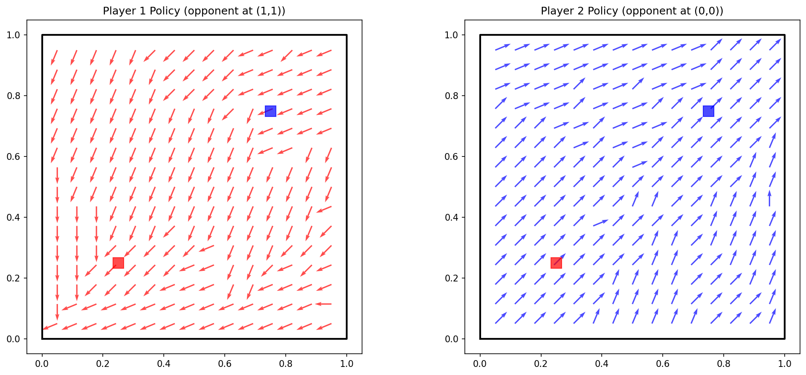

Multiple Agents & Q-Networks
Jacob Gust - CS298 Directed Study
Overview
This project explores how two agents act when making simultaneous choices in a game. The agents learn through neural planning by using a neural network as a compact stand-in for a Q-value table in Q-Learning. The planner repeatedly picks random states, asks the environment model what would happen for each joint action, and determines what each Q-value should be. Those values are the training labels and the network is adjusted so its predictions move closer to them. After enough iterations, the fitted network supports a policy without storing every state explicitly.
The planning loop adapts the bootstrap operator used to compute next-state values and the rule used to extract actions at policy time. Nash equilibria in small action spaces are computed exactly at policy extraction time via support enumeration, with a uniform-strategy fallback when no equilibrium is found. During planning a faster iterated best-response approximation is used for efficiency.
Car Game · Visualization
The car game is a discrete grid environment. Two cars occupy separate cells on an n×n board. The state records both positions: (x₁, y₁, x₂, y₂). Each step, both players choose one of four actions (up, down, left, or right) and move simultaneously, so there are 16 possible joint actions per state.
Rewards encourage moving toward the grid center. Visiting a square gives reward based on Manhattan distance to the center. Both cars receive penalties for colliding on the same cell (terminal) and a small per-step living cost.
Two variants share identical movement rules but differ in payoff structure and planning method.
Zero-Sum Car Game
Player 1 maximizes a single scalar reward and Player 2 minimizes the same quantity. The implementation uses one Q-network rather than separate networks per player. Due to the nature of the Minimax algorithm, Player 2 is incentivized to crash into Player 1, and Player 1 is incentivized to avoid crashing.
States are encoded as four normalized coordinates and passed through a fully connected network (4 → 64 → 64 → 16). The 16 outputs are the Q-values for all joint actions, reshaped as a 4×4 matrix Q(s, a1, a2).
Each iteration samples a random non-collision state from the full grid. For all 16 joint actions, the environment model computes the immediate reward and next state. For each resulting next state, the target network evaluates Q-values and applies a minimax backup, with value 0 at terminal crash states:
V(s′) = maxa₁ mina₂ Q(s′, a1, a2)
The Bellman target for each joint action is:
target = r + γ V(s′), γ = 0.9
All 16 targets for the sampled state are stored in a replay buffer; mini-batches are drawn to update the main network with Smooth L1 loss, Adam (lr 10⁻³), and gradient clipping.
After planning, the network is queried on every non-terminal grid state. Player 1 chooses the action with the largest row-minimum. Player 2 responds with the action that minimizes Q in that row.


P2 chasing P1 is visible before converging towards center squares
General-Sum Car Game
Each player receives a separate reward based on their own car’s position after the move. The same center bonus, stay penalty, and living cost are applied to each car independently. On a crash, both players receive the same large penalty in their own reward, so Player 1 and Player 2 are both incentivized to avoid collisions while still competing for favorable squares. The implementation uses two Q-networks, one per player, planned in parallel.
States are encoded as four normalized coordinates. Each network has the same architecture (4 → 64 → 64 → 16). The 16 outputs are reshaped as a 4×4 matrix: Q₁(s, a1, a2) for Player 1 and Q₂(s, a1, a2) for Player 2.
Each iteration samples a random non-collision state from the full grid. For all 16 joint actions, the environment returns separate rewards (r1, r2) and the next state. For each resulting next state, both target networks evaluate Q-values and a Nash backup estimates each player’s equilibrium value (0 at terminal crash states):
(V₁(s′), V₂(s′)) = NashValue(Q₁(s′), Q₂(s′))
During planning this uses a fast iterated best-response approximation (3 rounds). The Bellman targets for each joint action are:
target₁ = r1 + γ V₁(s′), target₂ = r2 + γ V₂(s′), γ = 0.9
All 16 targets per player are stored in separate replay buffers; mini-batches update each network with Smooth L1 loss, Adam (lr 10⁻³, halved every 500 steps), and gradient clipping.
After planning, both networks are queried on every non-terminal grid state. A Nash equilibrium of the two 4×4 Q-matrices is computed exactly via support enumeration; each player plays the pure action with highest mass in the equilibrium mix (uniform fallback if none is found).

Game results in crash

Dog Game · Visualization
The dog game is a continuous game played on the unit square [0, 1]². Each player controls a position in the plane. The state is all four coordinates. Each step both players choose among 17 actions: stay, or move in one of 16 directions spaced every 22.5° for a distance of 0.1. A dog sits at the midpoint of the two players. The dog's position is updated as the players move.
Dog Game
Player 1’s house sits at (0.25, 0.25) and Player 2’s at (0.75, 0.75) by default. Each player’s reward is the negative distance from the dog to their own house. Two Q-networks are planned in parallel.
States are four coordinates in [0, 1]². Each network uses architecture 4 → 256 → 256 → 289 (17×17 joint actions). Outputs reshape to Q₁(s, a1, a2) and Q₂(s, a1, a2). States are sampled randomly during planning, with mild boundary bias.
Each iteration draws a random state. For all 289 joint actions, the environment returns separate rewards (r1, r2) and the next state. Both target networks apply a Nash backup:
(V₁(s′), V₂(s′)) = NashValue(Q₁(s′), Q₂(s′))
During planning this uses a fast iterated best-response approximation (3 rounds). The Bellman targets for each joint action are:
target₁ = r1 + γ V₁(s′), target₂ = r2 + γ V₂(s′), γ = 0.5
Targets are stored in separate replay buffers; mini-batches update each network with Smooth L1 loss, Adam (lr 5×10⁻⁴ with warmup then decay), and gradient clipping. Target networks use soft Polyak updates (τ = 0.001).
At policy time, each 17×17 Q-matrix pair is reduced via iterated best response.



Limitations & Future Work
Limitations
Games assume the transition and reward rules are known in advance. The networks fit Q-values to analytically computed targets rather than discovering dynamics through interaction.
Function approximation introduces error. A finite number of planning iterations and sampled states cannot guarantee convergence to exact minimax or Nash values, especially in the dog game where the state space is not enumerated. When multiple equilibria exist, only one is selected at policy time.
The action spaces for the continous dog game is limited to a single step size and 16 angles.
Future Work
Results using Policy Gradient methods such as Advantage Actor-Critic and REINFORCE were not included in this page, as I was not confident in the results. These can be implemented to remedy the limited action space of the continous dog games.
More comparison of these results with typical single network results would better flesh out the benefits and demerits of using multiple networks.